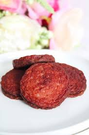

Recipe For Making Tres Golpes (The Three Hits)

Tres Golpes is a traditional Dominican breakfast made of mangú (mashed green plantains) served with fried salami, fried cheese, and eggs. It’s called “three hits” because of those three main sides.
- Ingredients
- Mangú: 3 green plantains, 4 cups water, 1 tsp salt, 2 tbsp butter, 1/2 cup milk
- Onions: 1 red onion, 2 tbsp vinegar, 1 tbsp oil, 1/4 tsp salt
- Hits: 6 slices salami, 4 slices frying cheese, 2 eggs, 2 tbsp oil
- Steps
- Boil 3 plantains in 4 cups salted water (1 tsp salt) for 15–20 minutes; mash with 2 tbsp butter and 1/2 cup milk, then set aside.
- Mix 1 sliced red onion with 2 tbsp vinegar, 1 tbsp oil, and 1/4 tsp salt; let sit 5–10 minutes.
- Heat 2 tbsp oil; fry 6 salami slices until browned.
- 
- In the same pan, fry 4 slices frying cheese until golden.
- Cook 2 eggs (fried or scrambled) and season with a pinch of salt.
- Serve mangú topped with onions; add salami, cheese, and eggs on the side.
Back to the homepage